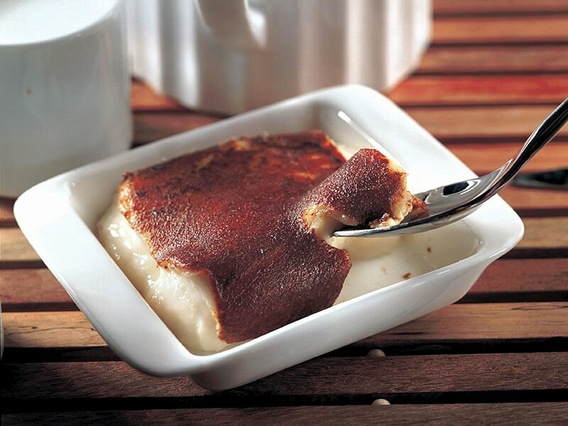

Kazandibi tatlısı, Saray (Payitaht) ve halk mutfağının tavuk göğsünden ortaya çıkardığı karamelize edilerek tadı yanıklaştırılmış kardeş tatlısıdır.
Kazandibi Tatlısı
Osmanlıda Saray Mutfağı sadece yemek pişiren bir yer değil; aynı zamanda Ar-Ge yapan ve sürekli yeni tarifler yapan, yeni lezzetler geliştiren bir araştırma üssüdür.Öyle ki matbahta çalışan ustalara yaratıcılıklarını göstermek adına fırsatlar da tanınmıştır. İşte Kazandibi tatlısı tam olarak Tavuk göğsü tatlısının bu şekilde geliştirilmesi sonucudur.